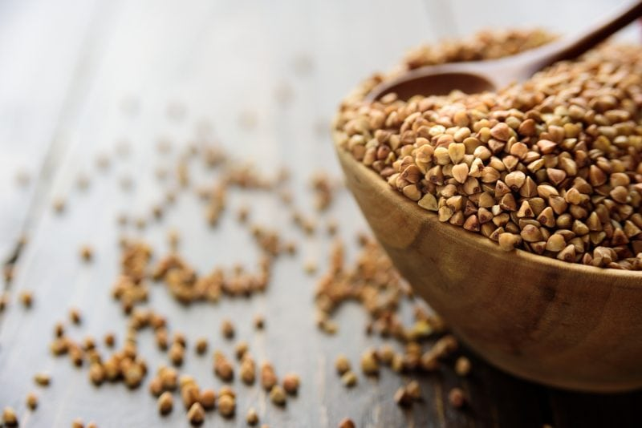
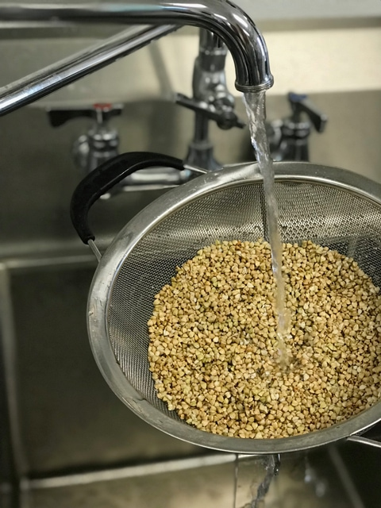
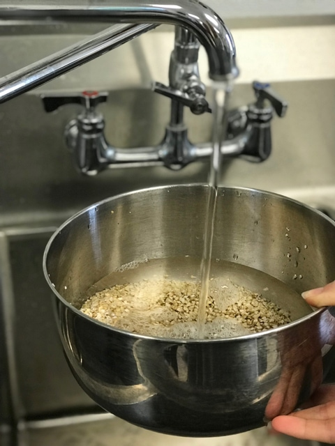
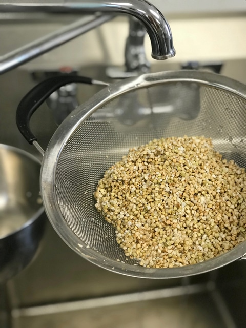
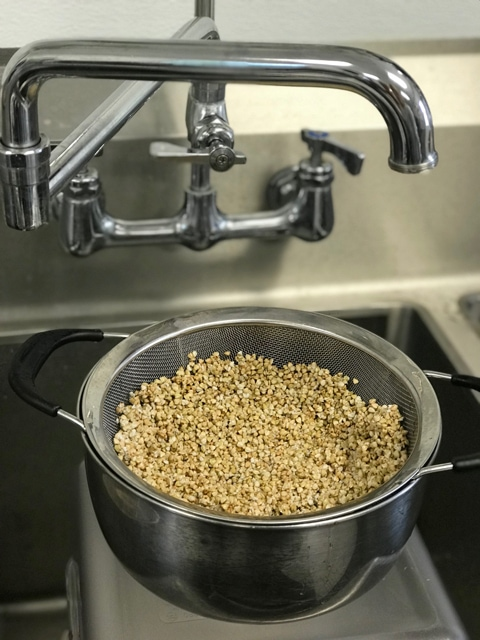
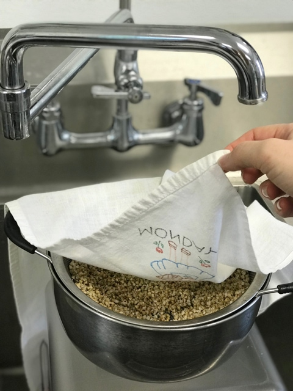
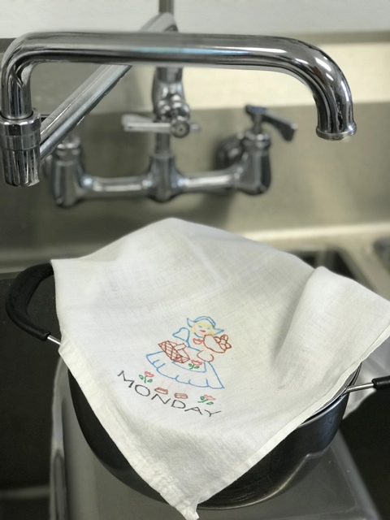

Buckwheat | Soaking and Sprouting
Buckwheat Groats are one of the quickest sprouts around. You can soak ’em for 20-30 minutes, rinse a few times and enjoy. Or you can continue the process to fully sprout them which can take up to 48 hours, which will unlock a powerhouse of nutrients.

Buckwheat groats are nutty, plump and extremely tender (when soaked). The word Groat literally means “a hulled seed”. Despite its name, buckwheat doesn’t contain wheat. It’s a gluten-free seed shaped like a plump pyramid.
Sprout-able buckwheat kernels are stripped of their inedible outer coating and then crushed into smaller pieces. They are lighter in color. If they are brown they have been toasted and are referred as Kasha. Be sure that you don’t confuse the two.
I love to sprout buckwheat groats because they open up (literally) to a powerhouse of nutrients. They are an excellent source of complex carbohydrates. as well as low in fat and have no cholesterol. They are also a good source soluble and insoluble fiber, contain folate, zinc, protein, iron, magnesium, phytonutrients, antioxidants, resistant starch, phytate and other nutrients.
How do I use Buckwheat in my diet?
There are so many wonderful things that you can do with sprouted buckwheat. After I sprout, dehydrate and put them in a jar to have them on hand for when kitchen creations strike! Looking for a healthy snack that offers a crunch? Buckwheat! Sprinkle them on salads, ice cream, coconut yogurt, oatmeal, chia porridge, eat by the handful, mix in granola, crackers, breads, cookies and so many other recipes. After sprouted toss with your favorite seasoning and dehydrate them.
Using groats as an ingredient will lower the calories and fat intake when they take the place of nuts. Use them as a cereal with some nut milk…remember Grape Nuts cereal?! (that used to be my favorite cereal prior to adding raw to my diet). Let it soak with other ingredients for a muesli. Use it in a pie crust (grind to a flour or put it together like a graham cracker crust). See, I can’t stop the ideas from rolling in.
Dry seeds are dormant and very difficult to digest but once they are soaked and sprouted they your body will be able to digest them and better absorb all the wonderful health benefits that they have to offer. Soaking a seed ends its dormancy and begins a new life. Special note… if you have a compromised digestive system, cooking them after the sprouting stage will be much easier on your body.
1 cup dry raw buckwheat = 2 1/3 cup sprouted (roughly)
 Enjoy within 30 minutes:
Enjoy within 30 minutes:
- Mix 2-3 parts water to 1 part buckwheat. You can’t use too much water, but you can soak for too long.
- The buckwheat seeds absorb a lot of water while soaking. All that matters is that we provide enough of it.
- Mix up the seeds to assure even water contact.
- Soak for about 30 minutes.
- When ready to drain and rinse the soak water, skim off any non-seeds that are floating on the water. Sometimes foreign “objects” can get mixed into the seeds.
- Soaked buckwheat becomes what is known as “mucilaginous”, it creates a slimy coating around the seeds… this happens when it is soaked too long. If this happens, just keep rinsing till the water runs through more clearly.
OR Sprout for optimum nutrition:
Rinsing and cleaning:
- Buckwheat Groats create starchy/cloudy water, be sure to rinse them for about a minute before soaking. This won’t remove all the starch but it will help.
- Use a strainer that had small enough holes to where the small buckwheat seeds won’t fall through.
Soaking Process:
- Transfer the buckwheat seeds to a bowl or quart sized jar.
- Add 2-3 times the amount of water to 1 part of seeds. So for 1 cup of buckwheat, add about 3 cups of water. Give the seeds a quick stir to ensure that water contact is made by all seeds.
- Soak for 30 minutes. Remember that they absorb up all the water they need quickly, that is why their soak time is so short. If they get waterlogged by soaking too long they may never sprout.
Time to sprout:
- Pour the seeds into a mesh strainer and rinse thoroughly with cool water, around 60-70 degrees (F).
- The soak water will very thick with a starchy water so, in order to get better sprouting results, you will want to make sure to rinse this off as much as possible.
- Rinse until the water runs clear and is less viscous.
- Do not skip this step.
- You can leave the seeds in the mesh strainer for the sprouting session, or use special sprouting trays.
- I find that keeping them in the strainer makes for less mess and easy cleanup.
- I set the strainer inside of a large bowl to catch any of the draining water. This important, this allows air to circulate and stops water from puddling in the buckwheat which could encourage bacteria growth.
- Set your drained buckwheat out of direct sunlight and at room temperature, 70 degrees (F) is optimal. This is where your sprouts will do their growing.
- Cover the sprouting contain with a breathable cloth such as cheesecloth. They like air-circulation, so don’t suffocate the sprouts.
Rinsing and draining:
- Twice a day rinse and drain the buckwheat.
- A good time would be right away in the morning when you are having breakfast, and then again in the later part of the day, when you are preparing dinner.
- So approximately, every 8-12 hours.
- If you live in a warmer climate you might want to add in one additional rinse and drain.
- Remember to rinse water around the temperature of 60-70 degrees (F).
- Be sure to cover in-between rinse and drain sessions. I encourage you to taste your crop of buckwheat at every rinse session, even after the first initial rinse and soak. They are already alive and can be enjoyed at any time during this process. I stop my grouts from sprouting when small tails form, otherwise they can get too bitter.
Harvesting:
- After the final rinse/drain session (again stopping at your desired time frame), drain them as thoroughly as possible after that final rinse. Spread out on a paper towel and blot dry. They will store best in your refrigerator if they are dry to the touch.
- Refrigerate ~ Place the sprouts in a plastic bag, or sealed container of your choice and store in the fridge.
- Use in breakfast porridges, sprinkle on top of yogurt or on top of salads for added crunch.
- Dehydrate:
- You can dehydrate the sprouted buckwheat by spreading them out on the mesh sheet that comes with the dehydrator. If the holes in the mesh screens are too large and your buckwheat seeds fall through, place on the teflex sheet. Place another mesh sheet on top to prevent them from flying around when the blower fan is on.
- Dry at 115 degrees (F) for about 4-6 hours or until completely dry.
- Store in an airtight container. These are great to eat by the handful, add to; granolas, yogurts, porridges, etc.
- Create a buckwheat flour by placing the seeds in a grain container that comes with the Vitamix or Blendtec and process to a fine powder. You can also use a spice or coffee grinder but you will need to do this in smaller batches. Make the flour as needed so you don’t lose nutrients.
-

-
Start by rinsing the buckwheat really well.
-

-
Place buckwheat in bowl and add 2x the volume of water.
-

-
After 30+ minutes, rinse the buckwheat again but leave in colander.
-

-
Spread the seeds around and leave the colander in a bowl to catch any dripping water.
-

-
Cover with a breathable cloth.
-

-
Allow it to sit overnight at room temp.
© AmieSue.com